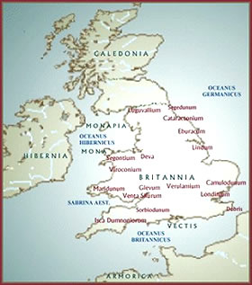
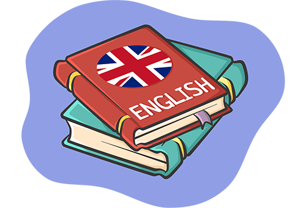
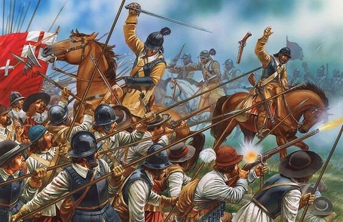
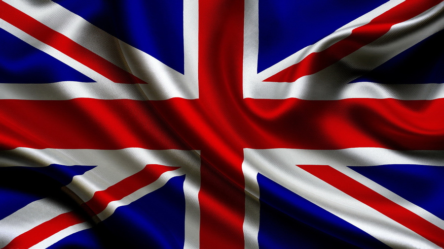

When it comes to understanding the history of England, it's often difficult to know when you should be using the terms 'England' or 'Britain'. From the arrival of the Anglo-Saxons into the Romans' 'Britannia' in the early fifth century AD, to the unions that previously bound the present-day countries of England, Scotland, Wales, Northern Ireland and Ireland, British history is certainly complex. Writing for History Extra, Dr Sean Lang separates the history of England from the history of the British Isles...
To annoy the Scots, Welsh or Irish, say “England” when you mean Britain. To annoy historians, say “Britain” when you mean England. Getting the distinction right may be difficult – but it’s important.
The original English were Angles, Saxons and Jutes of northern Germany and the Baltic region, who took over the Roman province of Britannia as the Roman empire collapsed. The indigenous ‘Britons’ maintained their hold in Wales and Cornwall, as did the Picts in northern Scotland, but otherwise the whole island – including the south of modern-day Scotland – was overrun by these ‘Anglo-Saxons’.
In due course they adopted Christianity, thereby tying their fortunes directly to the Roman Church. They also developed a flourishing and wealthy culture which attracted the unwelcome attention of the ‘Viking’ (pirate) peoples of Scandinavia, who descended on ‘Angle-land’ (i.e. England) and for a time conquered and ruled the northern part of it. The wars of resistance against the Vikings helped unite the English kingdoms and eventually produced the first Saxon king of all England, Æthelstan.
The English language
Anglo-Saxon England developed its own distinctive language and highly sophisticated culture, until in 1066 it was attacked and overrun by Normans from northern France. For some 300 years after that, England was tied closely to France, with a French-speaking monarchy and ruling class. The English became a subservient people in their own land. Over time, however, these French overlords became ‘anglicised’ through intermarriage with the English, and – with some French additions – English became the common language of all classes. It was these French ‘English’ rulers who launched the successful ‘English’ conquests of Ireland and Wales; in Scotland, however, King Robert the Bruce managed to resist invasion and Scotland remained a separate kingdom.
Medieval England was a wealthy country, flourishing on trade in fine woollen cloth and notable for its vibrant enthusiasm for the Catholic Church. The kings and lords of medieval England maintained substantial lands in northern and western France, and in the 14th century King Edward III went so far as to claim the French crown for himself.
He did, indeed, have a strong claim, and the kings of England fought a long series of wars in France – known as the Hundred Years War – to maintain their right to the French throne until eventually the French, inspired by Joan of Arc, forced them in the middle of the 15th century. This disaster, which predictably produced angry recriminations among the English nobility, led to a very bloody civil war – later named the Wars of the Roses – in which rival branches of the royal house fought for the throne. The eventual – and unlikely – winner was Henry Tudor, who seized the throne in 1485 and spent his reign strengthening his hold on it.
The Tudors
The Tudors were Welsh by origin and it was Henry Tudor’s son, Henry VIII, who incorporated Wales into England, though it retained its distinctive language and identity. It was also Henry VIII who, in the course of his celebrated dispute with the papacy about the status of his marriage to his first wife, Catherine of Aragon, pulled England out of the Church of Rome.
This defining moment in English history was deeply traumatic for the English, who had long proudly maintained their ‘special relationship’ with the papacy. It was especially felt when the break with Rome led to first Lutheran and then Calvinist Protestantism putting down roots in England, especially in the larger towns and in the south and east of the kingdom. This religious turmoil culminated, under the reign of Elizabeth I, in the establishment of a hybrid ‘Church of England’, which maintained the structures, hierarchy and fabric of the Roman church, but combined them with a clearly Protestant theology. The Church of England also covered Wales; in Ireland, however, it was confined to the English settler population. Scotland had its own separate Presbyterian (i.e. Calvinist) Church.
Under the Tudors, England developed as a highly successful state, with its government heavily centralised on London, which provided close links to the continent. The English language developed into the sophisticated poetry of Shakespeare and, as English people began to settle overseas, it began its spread into today’s global language. The Tudor period also saw the growth of the power of the English parliament and a closer, more interdependent relationship between England and Scotland.
Parliament, which alone had the power to make ‘statute’ law, was the body that gave legal status to the Tudor religious changes. By Elizabeth’s reign (which began on 17 November 1558), parliament was claiming an even greater role for itself in government, including the exclusive right to impose taxes. Elizabeth managed to avoid a serious clash with parliament but when she died childless (in 1603), the throne of England passed to the Stuart king of Scotland, James VI, who thereby became King James I of England.
The English Civil War
James originally hoped to combine the kingdoms of England and Scotland in one kingdom of ‘Great Britain’, but the idea found no support. The Stuarts’ claim to rule by ‘divine right’ [deriving their right from God], with no earthly restrictions on their powers, led inevitably to bitter arguments between Charles I and the English parliament and eventually, in 1642, to armed conflict. This English Civil War was part of a wider conflict that included a religious civil war in Scotland and a major Catholic rebellion in Ireland.
Parliament triumphed, defeating Charles’s supporters in both England and Scotland. The king was put on trial and executed (in January 1649); the monarchy and House of Lords were abolished; and out of the confusion that followed Oliver Cromwell emerged as ‘Lord Protector’ of an English Republic. Cromwell also forced through a union with Scotland and imposed his control on Ireland by brute force. However, after he died (in 1658) there was a power vacuum that was eventually filled by the restoration of the monarchy, in the person of King Charles II.
Parliament’s triumph over the Crown was sealed in 1688, when it invited a Dutch invasion to topple the Catholic son of Charles II, King James II, in what was dubbed the ‘Glorious Revolution’. This relatively smooth English coup had to be imposed on Ireland and the Scottish highlands by brute force. Catholic Ireland was punished for its support for King James by being kept in perpetual poverty. However, when Scotland also fell into financial collapse, thanks to the failure of its scheme to establish a colony at Darien in Central America, it sought rescue in 1707 through an Act and Treaty of Union with the much wealthier and more prosperous English state. This union produced a new kingdom, to be called ‘Great Britain’.
The British flag
It was in the century that followed the union that the English began to promote the creation of a new ‘British’ identity, with a British flag, British patriotic songs and iconography, and, increasingly, a British overseas empire. In 1801 another Act of Union brought Ireland into this ‘United Kingdom of Great Britain and Ireland’, as it was then officially called. As mechanised industrial production began to dominate the British economy in the 19th century, this new British state rapidly became the wealthiest and most powerful nation on the planet.
Industrial England remained by far the largest, most heavily populated and wealthiest part of the kingdom, though that did not stop the Victorians from encouraging a heavily idealised image of a rural England of picturesque country villages. They also often incorrectly referred to the whole kingdom as ‘England’, a habit which continued well into the 20th century, though it was also they who first marketed (and often invented) much of the ‘traditional’ cultures of Scotland, Wales and Ireland.
Nationalism
The main challenge to the unity of the kingdom came from Irish nationalism, which was eventually able to take advantage of the situation at the end of the First World War in 1918, to stage a successful war of independence [fought 1919–21]; six northern counties in Ulster, however, opted to remain part of the United Kingdom. Although the Scots and Welsh retained a strong sense of national identity, the experience of two world wars gave all the British a strong sense of unity against the German threat. It was only after the wars, as Britain’s empire collapsed and Britain sank in global power and importance, that Scottish and Welsh nationalism began to assert itself, with calls for devolved political power. These led, in 1999, to the creation of a Scottish Parliament and a Welsh Assembly. This led to a revival of English national feeling, often expressed through sport, even though the population of England was by then radically transformed by immigration – first from Commonwealth countries and then from Eastern Europe. Britain’s entry in 1973 into the European Economic Community (now the EU) had also raised questions about the nature of British identity, that led eventually to the Brexit vote in the 2016 referendum. England remains by far the largest part of the United Kingdom, though its identity and culture are highly diverse, with marked regional, ethnic and even class differences in voice, temperament and taste. London has grown so dominant that it is almost a separate entity from the rest of the country. Devolution has made the Westminster parliament a strange hybrid of a British and an English legislature. It remains incorrect to call Britain ‘England’, though many English people – as well as many foreigners – still do. Dr Sean Lang is a senior lecturer in history at Anglia Ruskin University.